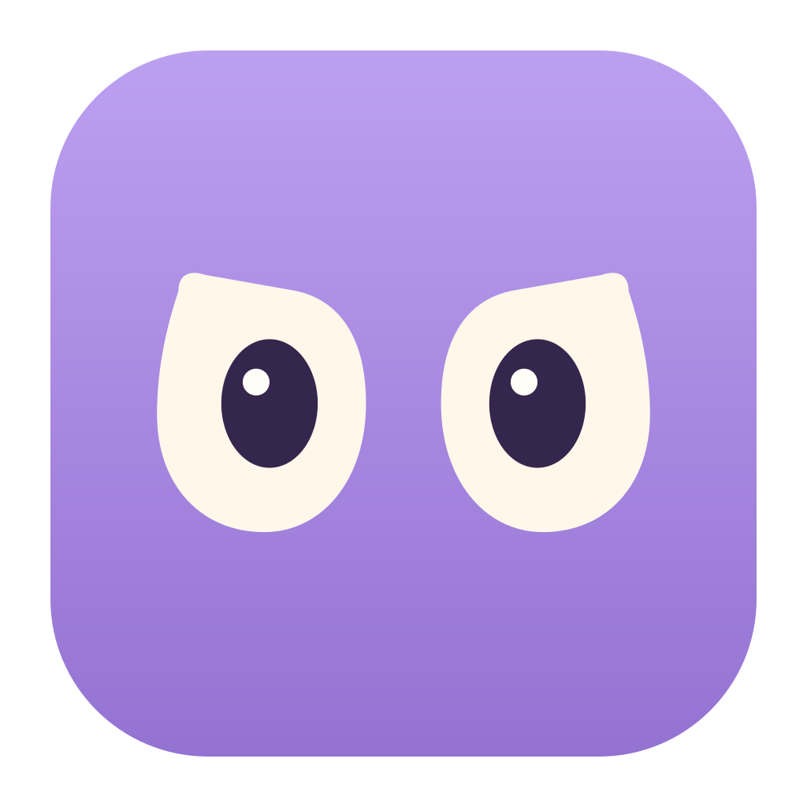
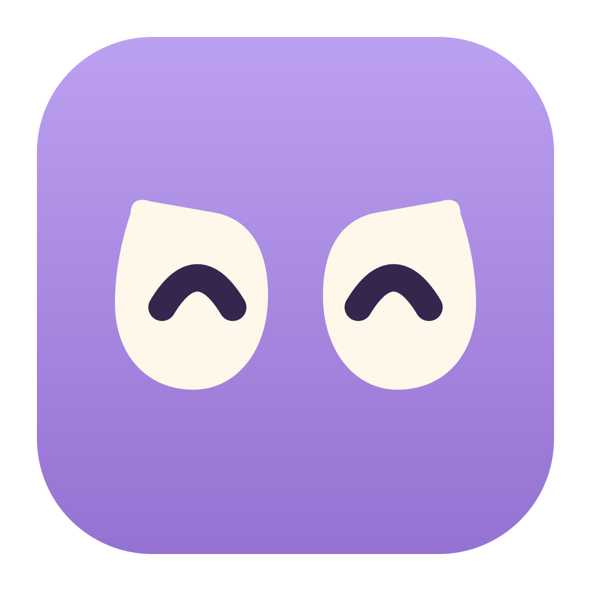
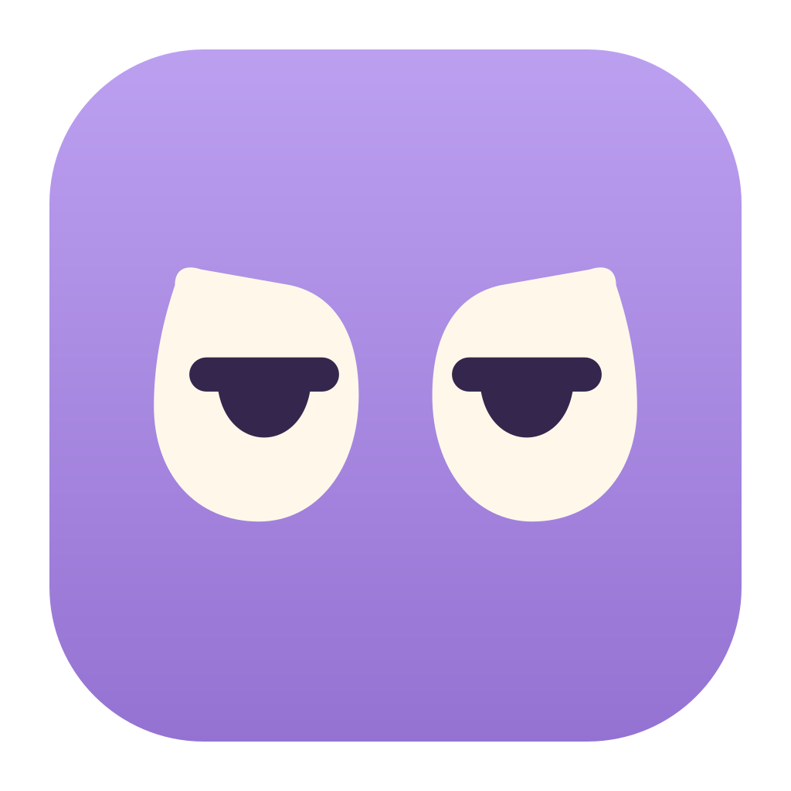

A초롱눈기본 로고 추천  또렷하고 호기심 있는 표정 메뉴바 · 원래 크기 happylulu09:41 happylulu09:41 눈 심볼 확대 앱 SVG눈 SVG
B반달눈웃는 반응  살짝 눌렀을 때 반갑게 웃는 느낌 메뉴바 · 원래 크기 happylulu09:41 happylulu09:41 눈 심볼 확대 앱 SVG눈 SVG
C능청눈느긋한 캐릭터  여유 있고 살짝 능청스러운 표정 메뉴바 · 원래 크기 happylulu09:41 happylulu09:41 눈 심볼 확대 앱 SVG눈 SVG